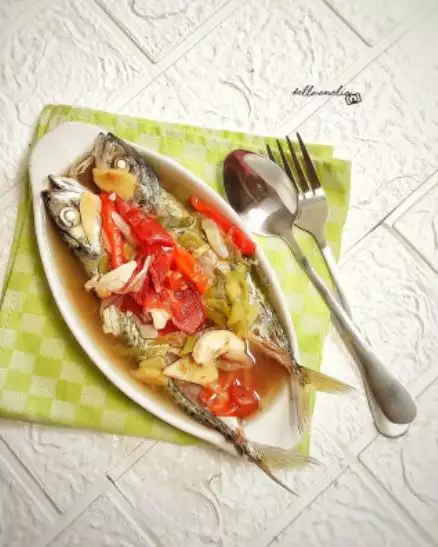

Tim Ikan Kembung

Bahan
- 6 ekor ikan kembung ukuran sedang
- 2 ruas jahe dipotong korek api
- 5 siung bawang putih, geprek
- 1 buah tomat dipotong-potong wedenganes
- 1/2 sdt saus tiram
- 2 batang bawang daun diiris serong
- 10 buah cabai rawit orange
- 1 sdm air jeruk nipis
- 1 sdt kecap manis (selera saja)
- Garam secukupnya
- Air secukupnya
Cara Membuat
- Di dalam panci/kuali, masukkan semua bahan kecuali tomat dan daun bawang lalu tata ikan kembung, terakhir taburkan tomat dan daun bawang.
- Tutup panci atau kuali, masak dengan api sedang selama 15-20 menit.
- Setelah matang, tes rasa.